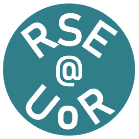
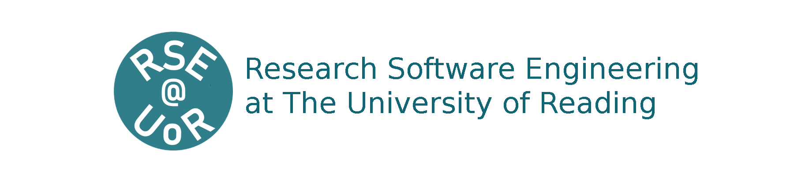

Sadie Bartholomew

Application to the Software Sustainability Institute Fellowship Programme 2022
Who am I?
In one sentence:
Educated in physics, for the past four years I have been working as an effective RSE in the field of climate and weather, under two different roles, contributing widely to open-source software.

Before my career

I completed an Integrated Masters in Physics at Durham University. There:
- I first learnt to program (
Hello World!), in the language I still use above all today, Python; a final-year project in computational particle physics using C++ activated my interest in software for research, openness of research artefacts and HPC.
My first software role

My first step onto the RSE career ladder was to join the Met Office as a Scientific Software Engineer.
I spent two years in that role contributing to open-source Python infrastructure libraries used to configure and run models for both operational forecasting and research.
My next, and present, software role
For approaching two years I have been working as a Computational Scientist for the Computational Modelling Services (CMS) group within the National Centre for Atmospheric Science (NCAS), based at the Department of Meteorology at University of Reading.


What do I do?
In my role as a Computational Scientist…

1. I advance open-source tools and infrastructure:
a) the Earth Science data analysis library cf-python + dependencies; b) ES-DOC for infrastructure supporting CMIP6† documentation.
These two lines of work involve a mix of tasks:
- development and maintenance;
- performance optimisation;
- user support and training.


2. I support and promote community standards:
- above all, the NetCDF Climate and Forecast Metadata Conventions
(CF Conventions), for example:
- indirectly through my work on cf-python;
- directly as a member of the official CF Conventions Information Management and Support Team;
- also helping develop a less-mature standard for aggregation of data abiding by the CF Conventions: the CFA Conventions.


3. I champion RSE work and knowledge exchange:
- presenting at general and domain-specific research software events:
- e.g. SORSE (International Series of Online Research Software Events)
in 2020 &
M-xResearch (RSE Emacs community) in 2021; - e.g. the 2021 CF Workshop and the ESiWACE Summer School on Effective HPC for Climate and Weather in 2020 and 2021;
- e.g. SORSE (International Series of Online Research Software Events)
in 2020 &
- on the SeptembRSE organising committee (workshops team);
- Knowledge Exchange Co-ordinator for the ExCALIBUR project;
- mentor for the SSI's Research Software Camp: Beyond the Spreadsheet;
- volunteer reviewer for the Journal of Open Source Software.


What do I propose?
If selected for a fellowship, my plans are…

…divided into two components:
 ⇐ hackathon + development and piloting of training
⇐ hackathon + development and piloting of training

⇔ HPC community-building and training workshops
1. CF Conventions Hackathon & Training
Aiming to ultimately benefit consumers and producers of Earth Science data

The issues I want to address
Software sustainability benefits of the CF Conventions: Updates and amendments are made by the community via: 
Improvements to the update process would mean increased throughput! But it is volunteer managed…
How I want to address those issues
Co-developing and piloting training, to cover:
- background to the CF Conventions and netCDF;
- (effective) use of them and best practice;
- a walkthrough on making a proposal for an update.
Hosting a hackathon:
- allowing us to dedicate time and collaborate closely on improving the technical aspects pertaining to the update process for the CF Conventions.
2. HPC community-building workshops
Aiming to ultimately benefit developers and users of high-performance simulation software
As well as my own domain, this includes very different fields such as astrophysics, particle physics and fusion energy.
The issues I want to address
- Approaching HPC Exascale era will require specialised skills:
- ↵ ExCALIBUR RSE Knowledge Integration Landscape Review details this and provides recommendations;
- how can we prepare RSEs in, and for, HPC fields?
- It's hard to track simulation software progress in other fields;
- how can we derive and share domain-agnostic insight?
(And, on a different note:)
- There's a fledgling RSE group that has spun up at my university and we in NCAS-CMS want to help it to thrive…

How I want to address those issues
Hosting two workshops:
- Gather established RSEs for a Congregation of Concerns:
- aim to maximise number of fields represented;
- explore shared challenges, cross-cutting progress, etc.
- Curate HPC skills training and pilot with the UoR RSE group:
- use of HPC resources, performant Python, data and IO;
- aim to gather, re-use and improve existing materials:
- HPC Certification Forum as a potential foundation
- develop and utilise HPC Carpentry resources?
Thank you for your consideration
These slides were written in org-mode for Emacs and exported
using the org-reveal tool to HTML code rendered in the browser with the
reveal.js framework.
The corresponding code and content is fully contained in a private GitHub repository which I will make public and use as a store for tracking the fellowship should I be selected for one.
To learn more about me, please see my:
- GitHub, user @sadielbartholomew;
- ORCID, iD 0000-0002-6180-3603;
- ResearchGate, handle Sadie-Bartholomew;
- personal website, sadielbartholomew.github.io;
- repository containing my CV, archive of talks, dotfiles, etc., github.com/sadielbartholomew/sadielbartholomew;
- SSI profile, www.software.ac.uk/sadie-bartholomew;
- Twitter, user @sadie_lb.